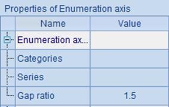
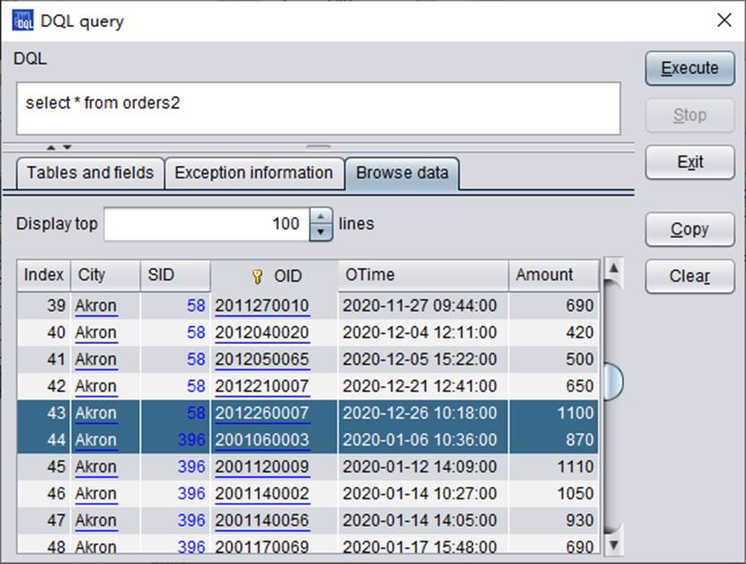
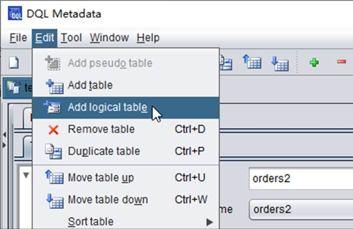
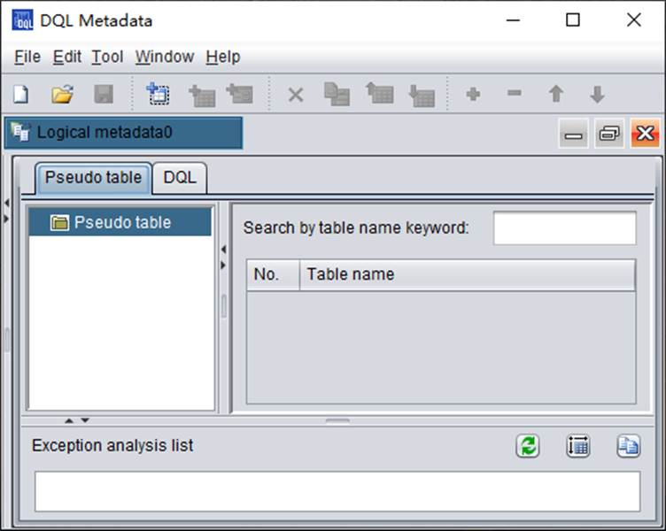

DQL tool is now provided only in esProc Enterprise edition. Its startup class is com.scudata.ide.spl.dql.DQL. Execute the file and start to define the metadata and use DQL to query data.
Start the DQL tool and you see the following interface:
Click ¡°New¡± icon , or click File->New through the menu bar, to generate a new DQL configuration file:

Select ¡°Logical metadata¡± to define the metadata:
